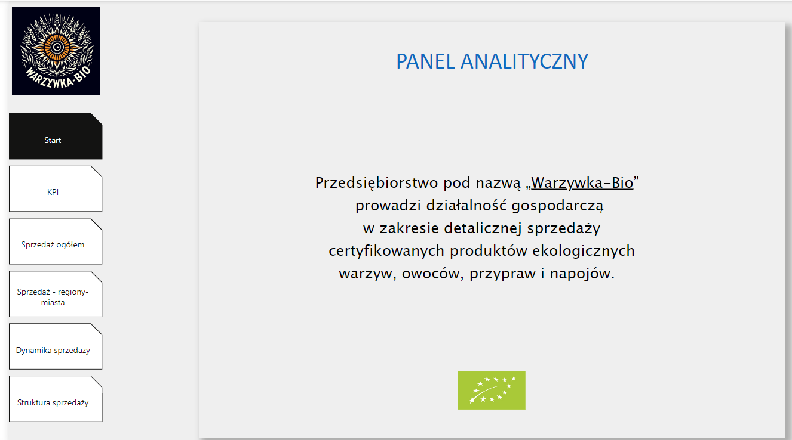
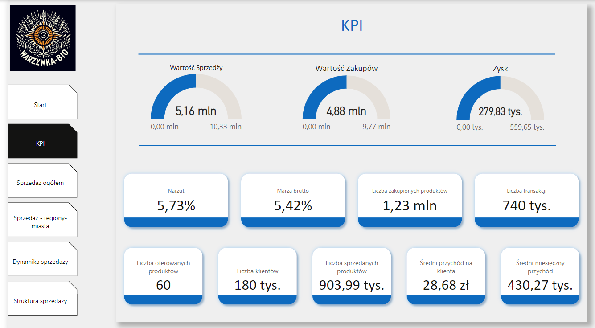
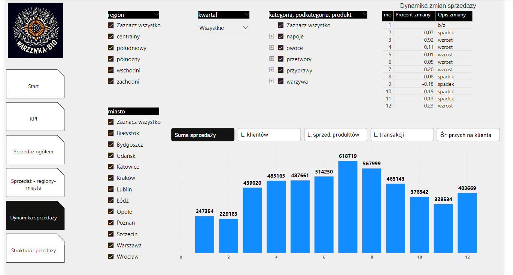

Projekt nr 2
Business Intelligence
Opis projektu Business Intelligence
Motywacja:
Impulsem do stworzenia projektu z zakresu Business Intelligence była chęć przedstawienia możliwości i korzyści z zaprojektowania i wdrożenia modelu analitycznego opartego o lokalną bazę danych w działalności gospodarczej dla mikrofirm.
Opis firmy:
Przedsiębiorstwo pod nazwą „Warzywka-Bio” prowadzi działalność gospodarczą w zakresie detalicznej sprzedaży certyfikowanych produktów „bio” i „eko”: warzyw, owoców, przypraw i napojów. Sprzedaż jest prowadzona w niewielkich osiedlowych sklepikach zlokalizowanych w 12 miejscowościach na terenie RP. Sprzedaż ta jest ewidencjonowana za pomocą kas rejestrujących. Zakupy towarów są dokonywane od różnych dostawców: producentów, rolników, przetwórców, hurtowników. Wszystkie zdarzenia gospodarcze (sprzedaż - na podstawie dziennych raportów fiskalnych oraz zakupy – na podstawie faktur VAT) są ewidencjonowane w ewidencjach sprzedaży i zakupów VAT (tabele w EXCEL) a następnie rejestrowane w małej, prostej i lokalnej bazie danych opartej o program Microsoft Access, stworzonej dla właściciela firmy w celu ułatwienia podejmowania decyzji biznesowych. Bazę danych zaprojektowano w ten sposób by w łatwy i szybki sposób umożliwiała tworzenie prostych raportów (podsumowań). Analizy i podsumowania (ilości i wartości sprzedanych towarów) były prowadzone raz na miesiąc, kwartał, rok.
Wnioski:
Prowadzone dotychczas analizy, które były podstawą podejmowanych decyzji przez właściciela firmy okazały się niewystarczające. Przenoszenie danych z ewidencji, raportów fiskalnych było czasochłonne i pracochłonne. Przedkładane właścicielowi firmy raporty przedstawiały zagregowane ilości oraz wartości zakupionych i sprzedanych towarów w postaci surowych liczb bez uwzględnienia innych kontekstów prowadzonej działalności min. analizy wg lokalizacji, faktu, że sprzedaż warzyw i owoców podlega sezonowości, towary te nie mogą być nadmiernie gromadzone, poprzez tworzenie zapasów (zaobserwowano znaczny odsetek ubytków).
Ponadto po zakończeniu roku obrotowego dokonano podsumowania efektów prowadzonej działalności gospodarczej i przedłożono właścicielowi firmy ustalenia z przeprowadzonej analizy, w której znalazły się wnioski:
- W lokalizacjach, gdzie znajdowały się sklepy firmy "Warzywka-Bio" powstało wiele innych warzywniaków, w tym małe markety spożywcze, które również oferowały produkty "bio" i "eko";
- Wartość sprzedaży w 2019 r. w stosunku do 2018 r. spadła o około 7%, a liczba oferowanych produktów natomiast się zwiększyła o 10 rodzajów.
- Liczba klientów (ustalona na podstawie liczby paragonów fiskalnych) również zmalało o koło 2%.
- Zaobserwowano znaczny wzrost ubytków w towarze (zepsucie, utrata świeżości, stłuczenia opakowań szklanych), ustalono, że powyższe wynika z nadmiernym tworzeniem zapasów, oraz nieprawidłowym sposobie przechowywania produktów.
Zatem, w związku ze wzrostem konkurencji na rynku sprzedaży warzyw i owoców, spadkiem obrotów r.d.r, nadmiernymi ubytkami w towarze oraz chęcią nie tylko utrzymania własnego biznesu, ale również rozwoju i ekspansji na nowe lokalizacje i powiększenie bazy towarowej właściciel firmy zdecydował się na implementację nowych narzędzi informatycznych, które umożliwią w przyszłości skuteczniejsze podejmowanie decyzji i trwały rozwój firmy.
Wymagania:
- Niski koszt wdrożenia;
- Łatwa i bezproblemowa integracja z obecnym systemem informatycznym opartym na lokalnej bazie danych;
- Możliwość dokonywania pogłębionych analiz (drążenie danych);
- Możliwość łatwego i szybkiego tworzenia raportów opartych na tabelach i wykresach;
Oczekiwane raporty i analizy:
W ujęciu statystycznym
- Ilości i wartości sprzedaży wg produktów, podkategorii i kategorii produktowych;
- Struktura sprzedaży (% udziały);
- Top N (najlepiej i najgorzej sprzedające się towary);
- Analiza koszykowa (liczba klientów, liczba produktów na koszyk, wartość koszyka);
W ujęciu dynamicznym
- Ilości i wartości sprzedaży wg roku, miesiąca, dni, godzin;
- Sprzedaż narastająco (miesięcznie, kwartalnie);
- Zmiany wartości sprzedaży w czasie (wzrosty i spadki) na przestrzeni czasu;
W ujęciu geograficznym
- Wartość sprzedaży w regionach i miastach.
Wybór technologii:
Z uwagi na rozmiar firmy oraz konieczność minimalizacji kosztów zdecydowano się na wdrożenie wielowymiarowego modelu danych opartych na prowadzonej już lokalnej bazie danych oraz zainstalowanie darmowego oprogramowania "Power BI Desktop" wykorzystywanego jako narzędzie analityczne typu Business Intelligence, umożliwiające prowadzenie pogłębionych analiz oraz wizualizację danych pochodzących z wielu źródeł. Powyższe spełnia również wstępne wymagania i oczekiwania odnośnie rezultatów.
Z uwagi na fakt, iż model danych zawarty w lokalnej bazie danych oparty był schemat "płatka śniegu", w celu zoptymalizowania analiz i raportowania w programie Power BI Desktop zdecydowano się na takie przekształcenie modelu nie tracąc wartości analitycznych móc prowadzić zaawansowane analizy przeprojektowano model do prostego układu wg schematu „gwiazdy”.

Etapy przekształcenia do pożądanego wielowymiarowego modelu danych:
- Utworzenie tabeli Region z przekształcenia tabeli Sklepy i przypisaniu miast do regionów sprzedaży
- Utworzenie tabeli Produkty z połączenia tabel Produkty, Podkategorie, Kategorie
- Utworzenie tabeli Data z wyodrębnienia składników daty i czasu kolumny Data w tabeli Sprzedaż
Powyższy układ znacznie ułatwi i przyspieszy prowadzenie analiz i raportowania.
Kolumny w tabeli Sprzedaż:
- Ilość: Ta kolumna pełnić będzie rolę faktów i reprezentuje ilość sprzedanych produktów.
- Należność: Kolumna Należność również pełnić będzie rolę faktów i zawiera informacje o wartości sprzedaży.
Kolumny w tabeli Data:
Kolumny w tabeli Data pełnić będą rolę wymiaru i zawierają składniki daty i czasu, co pozwala na analizę sprzedaży w zależności od czasu.
Kolumny w tabeli Region:
Kolumny w tabeli Region pełnić będą rolę wymiaru i reprezentują regiony sprzedaży, uwzględniając przypisane miasta.
Kolumny w tabeli Produkty:
Kolumny w tabeli Produkty pełnić będą rolę wymiaru i reprezentują produkty oraz ich kategorie i podkategorie, umożliwiając analizę sprzedaży produktów w kontekście hierarchii kategorii.

Tworzenie Miar na Podstawie Danych w Tabelach:
- Liczba oferowanych towarów
- Suma sprzedaży
- Ilość sprzedanych towarów
- Średnia wartość sprzedaży
- Średnia ilość sprzedaży
- Liczba klientów
- Liczba sprzedanych produktów na klienta
- Wartość sprzedaży na klienta
- Zysk (sprzedaż - zakupy)
- Narzut (sprzedaż - zakupy) / sprzedaż
- Marża brutto (sprzedaż - zakupy) / zakupy
Powyższe miary pozwalają na dokonywanie analiz w różnych kontekstach i przekrojach, co umożliwia lepsze zrozumienie i monitorowanie działalności firmy oraz podejmowanie informowanych decyzji.
Stworzone miary analityczne w języku DAX
DAX to język używany do tworzenia formuł i obliczeń na danych w modelach tablicowych w Power BI, Analysis Services i Power Pivot w Excelu.DAX to dynamiczne formuły, które zwracają różne wyniki w zależności od kontekstu, w którym są używane
wyjaśnienie, co robi każda z moich miar:
- Zysk = [Suma sprzedaży] - [Suma zakupów]:
Oblicza różnicę między sumą sprzedaży a sumą zakupów dla każdego wiersza lub komórki w raporcie. - TotalSumaKategoria = CALCULATE([Suma sprzedaży], all(Produkty[kategoria])):
Oblicza sumę sprzedaży dla wszystkich produktów w danej kategorii, ignorując inne filtry na tabeli Produkty. - TotalSuma = CALCULATE([Suma sprzedaży], all()):
Oblicza sumę sprzedaży dla wszystkich produktów w modelu, ignorując wszystkie filtry. - Średnia liczba produktów na klienta = AVERAGEX(_Miary, [Liczba oferowanych produktów] / [Liczba klientów]):
Oblicza średnią liczbę produktów oferowanych na klienta, dzieląc liczbę oferowanych produktów przez liczbę klientów dla każdej wartości w tabeli _Miary. - Średni przychód na klienta = [Suma sprzedaży] / [Liczba klientów]:
Oblicza średni przychód na klienta, dzieląc sumę sprzedaży przez liczbę klientów dla każdego wiersza lub komórki w raporcie. - Średni miesięczny przychód = [Suma sprzedaży] / DISTINCTCOUNT(Kalendarz[miesiąc]):
Oblicza średni miesięczny przychód, dzieląc sumę sprzedaży przez liczbę unikalnych miesięcy w tabeli Kalendarz. - Suma zakupów = SUMX(Zakupy, Zakupy[ilość_jednostek] * Zakupy[cena_jednostkowa_ zakupu]):
Oblicza sumę zakupów, mnożąc ilość jednostek i cenę jednostkową zakupu dla każdego wiersza w tabeli Zakupy, a następnie sumując wyniki. - Suma sprzedaży = SUM('Sprzedaż'[należność]):
Oblicza sumę sprzedaży, sumując wartości kolumny należność w tabeli Sprzedaż. - Różnica do poprzedniego miesiąca = IF([Mc_poprzedni] > 0, [Suma sprzedaży] - [Mc_poprzedni]):
- Oblicza różnicę między sumą sprzedaży a sumą sprzedaży z poprzedniego miesiąca, jeśli ta ostatnia jest większa od zera, w przeciwnym razie zwraca pustą wartość. - Ranking produktów = RANKX(ALL(Produkty[produkt]), [Suma sprzedaży]):
Oblicza ranking produktów według sumy sprzedaży, ignorując inne filtry na kolumnie produkt w tabeli Produkty. - Ranking podkategorii produktów = RANKX(ALL(Produkty[podkategoria]), [Suma sprzedaży]):
Oblicza ranking podkategorii produktów według sumy sprzedaży, ignorując inne filtry na kolumnie podkategoria w tabeli Produkty. - Ranking miast = RANKX(ALL(Region[miasto]), [Suma sprzedaży]):
Oblicza ranking miast według sumy sprzedaży, ignorując inne filtry na kolumnie miasto w tabeli Region. - Procent zmiany = IFERROR([Róznica do poprzedniego miesiąca] / [Mc_poprzedni], BLANK()):
Oblicza procentową zmianę między sumą sprzedaży a sumą sprzedaży z poprzedniego miesiąca, jeśli ta ostatnia jest różna od zera, w przeciwnym razie zwraca pustą wartość. - Opis zmiany = SWITCH(true(), [Procent zmiany] < 0, "spadek", [Procent zmiany] > 0, "wzrost", [Procent zmiany] = 0, "b/z"):
Zwraca opis zmiany w zależności od wartości procentowej zmiany, używając instrukcji SWITCH, która sprawdza warunki po kolei i zwraca pierwszy pasujący wynik. - Narzut = ([Suma sprzedaży] - [Suma zakupów]) / [Suma zakupów]:
Oblicza narzut, dzieląc różnicę między sumą sprzedaży a sumą zakupów przez sumę zakupów dla każdego wiersza lub komórki w raporcie. - Marża brutto = ([Suma sprzedaży] - [Suma zakupów]) / [Suma sprzedaży]:
Oblicza marżę brutto, dzieląc różnicę między sumą sprzedaży a sumą zakupów przez sumę sprzedaży dla każdego wiersza lub komórki w raporcie. - Mc_poprzedni = CALCULATE([Suma sprzedaży], DATEADD(Kalendarz[Date], -1, MONTH)):
Oblicza sumę sprzedaży z poprzedniego miesiąca, używając funkcji DATEADD, która przesuwa datę w tabeli Kalendarz o jeden miesiąc wstecz. - Liczba zakupionych produktów = SUM(Zakupy[ilość_jednostek]):
Oblicza liczbę zakupionych produktów, sumując wartości kolumny ilość_jednostek w tabeli Zakupy. - Liczba transakcji = DISTINCTCOUNT('Sprzedaż'[id_sprzedaż]):
Oblicza liczbę transakcji, licząc unikalne wartości kolumny id_sprzedaż w tabeli Sprzedaż. - Liczba sprzedanych produktów = SUM('Sprzedaż'[ilość]):
Oblicza liczbę sprzedanych produktów, sumując wartości kolumny ilość w tabeli Sprzedaż. - Liczba oferowanych produktów = DISTINCTCOUNT(Produkty[id_produkt]):
Oblicza liczbę oferowanych produktów, licząc unikalne wartości kolumny id_produkt w tabeli Produkty. - Liczba klientów = DISTINCTCOUNT('Sprzedaż'[paragon]):
Oblicza liczbę klientów, licząc unikalne wartości kolumny paragon w tabeli Sprzedaż. - % udział podkategorii w kategorii = Divide(CALCULATE([Suma sprzedaży], ALL('Produkty'[kategoria])), CALCULATE([Suma sprzedaży], ALL('Produkty'[podkategoria]))):
Oblicza procentowy udział podkategorii w kategorii, dzieląc sumę sprzedaży dla danej podkategorii przez sumę sprzedaży dla danej kategorii, ignorując inne filtry na tabeli Produkty. - % udział podkategorii ogółem = Divide([Suma sprzedaży], CALCULATE([Suma sprzedaży], ALL('Produkty'[podkategoria]))):
Oblicza procentowy udział podkategorii ogółem, dzieląc sumę sprzedaży dla danej podkategorii przez sumę sprzedaży dla wszystkich podkategorii, ignorując inne filtry na tabeli Produkty. - % udział kategorii ogółem = Divide([Suma sprzedaży], CALCULATE([Suma sprzedaży], ALL('Produkty'[kategoria]))):
Oblicza procentowy udział kategorii ogółem, dzieląc sumę sprzedaży dla danej kategorii przez sumę sprzedaży dla wszystkich kategorii, ignorując inne filtry na tabeli Produkty.
Screeny stron raportów z programu Power BI Desktop

